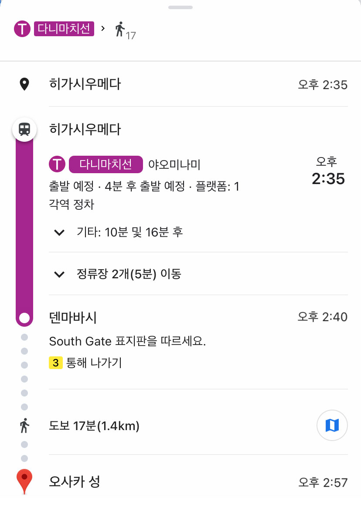

해외여행 시 구글 지도 어플리케이션을 통한
지하철 승차권 발급 프로젝트 사용성 A/B 테스트
안녕하세요.
계원예술대학교 전공심화과정 1학년에 재학중인 김영정, 정우민, 안유림입니다.
해당 설문은 디지털프로토타이핑 수업의 자료로만 사용됨을 미리 알려드립니다.
아래의 사전배경을 확인하시고 다음 화면의 두 가지 티켓구매 방식을 체험한 다음 설문조사에 반드시 참여해주시면 감사하겠습니다.
사전배경
당신은 일본을 여행 중입니다. 현재 히가시우메다 역에 있고, 오사카성으로 이동하려고 합니다.
우선 구글 지도 어플리케이션을 이용해 경로를 검색합니다. 오사카성으로 가려면 덴마바시 역에서 하차해야 합니다. 당신은 덴마바시 역이 목적지인 지하철 승차권을 구매하려고 합니다.
A방식은 기존의 지하철 승차권 발매기를 이용하는 과정입니다.

노선도를 보고 현위치와 텐마바시역까지의 거리별 요금을 확인하였습니다. 180엔입니다.